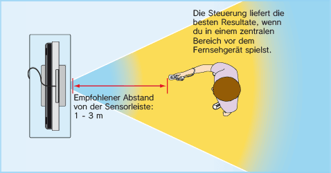

2 |
Zum sicheren Gebrauch |
 |
  Weitere Informationen zum Gebrauch der Handgelenksschlaufe Der Spielablauf mit der Wii-Fernbedienung kann schnelle und dynamische Bewegungsabläufe mit sich bringen. Bitte verwende stets die Handgelenksschlaufe, um das Risiko zu verringern, dass dir die Wii-Fernbedienung beim Spielen aus der Hand gleitet und dadurch Schäden an der Umgebung sowie der Wii-Fernbedienung entstehen oder andere Personen verletzt werden.
Sorge für ausreichend Platz zum Spielen! Während des Spielens mit der Wii-Fernbedienung wirst du möglicherweise Platz zum Bewegen benötigen. Stelle sicher, dass sich in deinem Bewegungsumfeld weder andere Personen noch Gegenstände oder Möbel befinden, um ein Aneinanderstoßen zu vermeiden. Beachte bitte auch den empfohlenen Mindestabstand von einem Meter zum Fernseher. 
Diese Informationen kannst du auch unter
|
 auf der Wii-Fernbedienung loslassen – LASSE AUF KEINEN FALL DIE Wii-FERNBEDIENUNG SELBST LOS. Solltest du beim Spielen feuchte Hände bekommen, unterbrich das Spielen unbedingt und trockne deine Hände und die Wii-Fernbedienung ab. Übermäßige Bewegungen und ein Loslassen der Wii-Fernbedienung könnten die Handgelenksschlaufe beschädigen. Sollte dir die Wii-Fernbedienung entgleiten, könnte dies zu Verletzungen von in der Nähe stehenden Personen oder zu Schäden an nahegelegenen Objekten führen.
auf der Wii-Fernbedienung loslassen – LASSE AUF KEINEN FALL DIE Wii-FERNBEDIENUNG SELBST LOS. Solltest du beim Spielen feuchte Hände bekommen, unterbrich das Spielen unbedingt und trockne deine Hände und die Wii-Fernbedienung ab. Übermäßige Bewegungen und ein Loslassen der Wii-Fernbedienung könnten die Handgelenksschlaufe beschädigen. Sollte dir die Wii-Fernbedienung entgleiten, könnte dies zu Verletzungen von in der Nähe stehenden Personen oder zu Schäden an nahegelegenen Objekten führen.


 |
 |
 |